IT Portfolio 2026
방지섭 2001.03.06
2년 1,429제, 4년 4.5학점
전공 81학점 전 과목 A+ · 백준 2년에 걸쳐 Platinum III
Contact
E-MAILbjs0306b@gmail.com
GITHUBgithub.com/bjs0306b
BLOGvelog.io/@bjs0306b
BAEKJOONacmicpc.net/user/bjs0306b
SOLVED.ACsolved.ac/profile/bjs0306b
Awards
SSAFY 2학기 공통 프로젝트 3등
SSAFY 1학기 성적우수상
최우등 졸업 학장상
INU 코드페스티벌 은상
Certifications
정보처리기사2026.06.12
ADsP2026.06.05
SQLD2026.03.27
삼성 SW 역량테스트 B형2026.03.14
Activity
SSAFY 15기2026.01 ~ 진행 중
INU 코드페스티벌 출제·검수2025.07 ~ 2025.10
수학 학원 튜터2023.07 ~ 2025.12
인천대학교 컴퓨터공학부2020.03 ~ 2026.02
01HaruRouteRAG 챗봇 여행 플래너 백엔드 · 인프라 · AISpring FastAPI k3s
02F.A.S.T.무인 지게차 적재 자동화 스크럼 마스터 · AI · 비전PyTorch TensorRT ROS 2
03HairFolio외주 1인 풀스택 웹 · 앱 · 서버Spring Boot React React Native
04LearnBridgeRBAC 통합 학사관리 LMS 인증 · 인가 · E2EReact Playwright
Project 01
HaruRoute
공공데이터 관광지에 RAG 챗봇을 붙인 여행 플래너
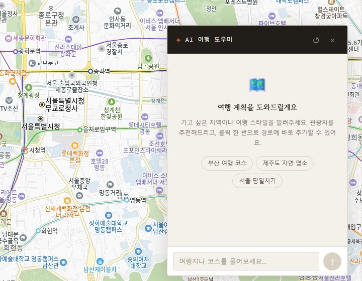
AI 여행 도우미 · 답변의 장소를 클릭 한 번으로 경로에 추가
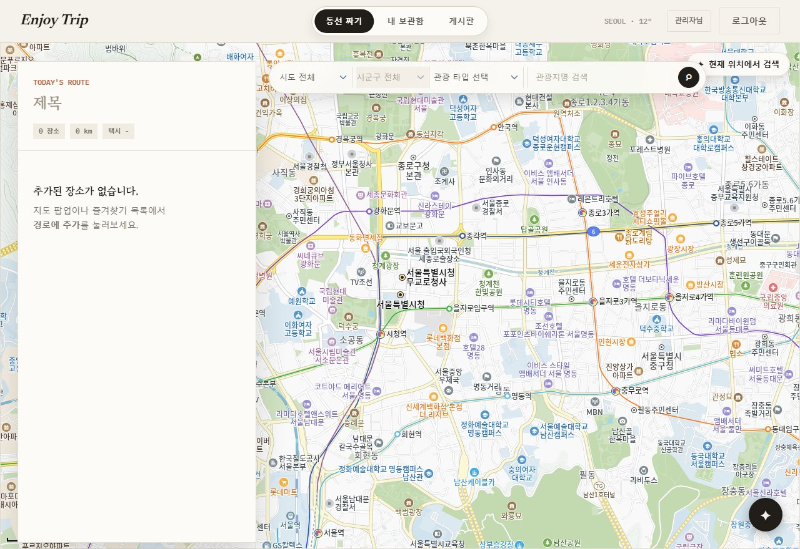
동선 짜기 · 지역·타입 필터 + 지도에서 경로 편집
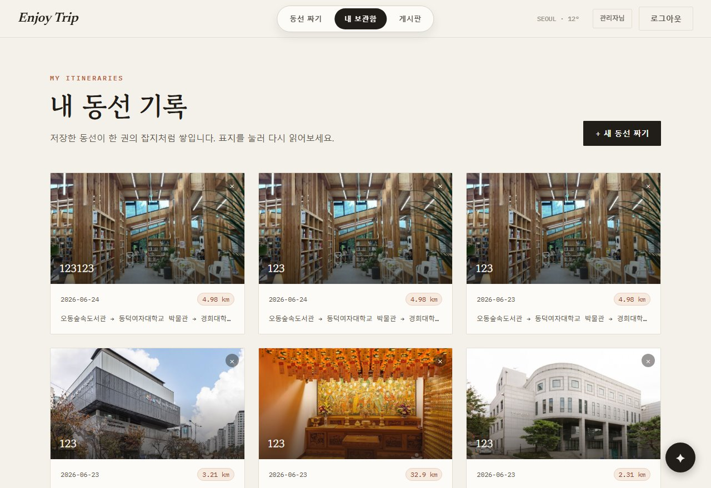
내 동선 기록 · 저장한 경로와 거리
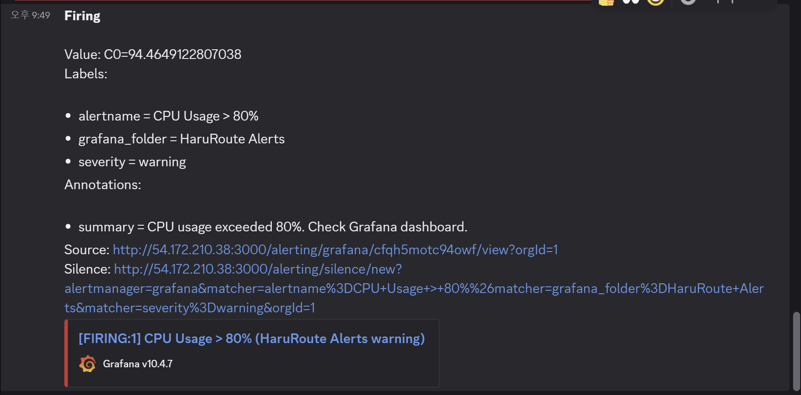
FIRING · CPU 94.5% 임계 80% 초과
Project 01 HaruRoute
03 / 15
부하 테스트 병목을 하나씩 소거
100 VU · p95 1,310ms · 에러 49% → 1,000 VU · 315ms · 0%
10 → 20
① 커넥션 풀 고갈
pod를 늘려도 p95 불변 → 병목은 CPU가 아니라 DB I/O. HikariCP 풀을 키워 에러율 48.99% → 24.70%, p95 1,310 → 1,130ms.
17MB/s
② 응답 크기 제한
spots가 456건(≈175KB)을 한 번에 내려보내 100 VU에서 네트워크 포화. 100건 제한만으로 p95 1,130ms → 22ms. 에러율은 그대로.
1,350 → 454ms
③ Redis 캐싱 · 대상 분리
Redis 캐싱: spots 결과(TTL 30분)는 쿼리를, route(TTL 1시간)는 DB를 안 쓰는 TSP 연산 자체를 생략. route p95 기준.
2 → 4
④ HPA 스케일아웃
HPA(CPU 70% 초과 시 pod 2 → 4). 캐시가 식어 CPU가 뛰는 구간의 보완책. I/O 병목엔 무효, CPU 병목엔 유효.
400
⑤ k6 인코딩 버그 분리
k6가 한글 파라미터를 인코딩하지 않고 보내 받은 응답. encodeURIComponent 한 줄로 0%. 테스트가 만든 에러를 걷어내야 진짜 서버 에러가 보임.
Project 01 HaruRoute
04 / 15
RAG 챗봇의 답이 되는 관광지 50,686건
DB가 곧 RAG 문서 · 매일 새벽 재생성 → 항상 최신 공식 명칭.
RAGFastAPI · ChromaDB(MiniLM) · Claude Sonnet
① 관광지 DB → RAG 문서MySQL 관광지 50,686건으로 RAG 문서 자동 생성, 매일 03:30 갱신 · 동기화는 Bulk Upsert로 오버헤드 90%↓.
↓
② 임베딩 검색 · ChromaDBMiniLM 임베딩으로 ChromaDB에서 검색. 멀티턴 대화 유지, 외부 호출이 흔들리면 Circuit Breaker로 전환.
↓
③ 경로 원클릭 추가답변의 장소명이 공식명칭과 일치해 클릭 한 번으로 경로에 추가.
Project 01 HaruRoute
05 / 15
인프라 겪은 문제로 정한 다음 단계
환경 차이 → 컨테이너, 자원 경합 → 오케스트레이션.
① 로컬
팀원 간 환경 차이로 같은 코드가 다르게 동작 → 컨테이너로 통일.
→
② Docker Compose · 단일 EC2
포트 충돌과 OOM 발생. AI 이미지를 10GB → 2GB로 줄였지만 한 대에 다 올린 구조 자체가 한계.
→
③ k3s · RDS · ECR
3-tier로 책임 분리, 무중단 배포·Health Probe·PDB·Rate Limiting 적용. 지표는 Grafana, 알림은 Discord.
Project 01 HaruRoute
06 / 15
트러블슈팅 에러 없이 조용히 어긋난 세 건
로그가 아니라 동작으로 발견.
ECR 토큰 만료
Grafana 알람
배치 기준일
보인 것
ImagePullBackOff · 다음 날 배포 실패
CPU가 올라도 알림 없음
매일 같은 날짜로 정리
원인
ECR 토큰 12h 만료containerd가 IAM 인증을 모름
다중 시리즈 미평가threshold는 스칼라 하나만 받는데 pod마다 시리즈가 와 매 평가가 오류 → 상태가 Normal로 남음
싱글톤 빈에 기준일 고정재기동 전까지 그대로
해결
registries.yaml · IAM · cron 갱신
classic_conditionsCPU 80 / Heap 85 / 5xx 5% 실측
@StepScope · 실행 시점 바인딩
Project 02
F.A.S.T.
1/10 스케일 실물 창고에서 도는 무인 지게차 물류 자동화
01측정 스테이션
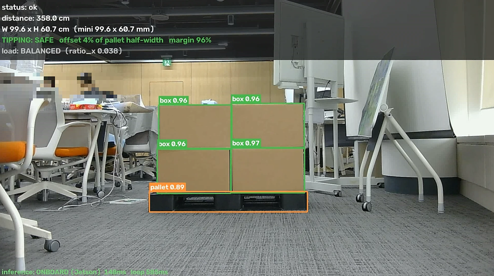
TIPPING: SAFE 화물이 파렛트 중앙 · 여유 96%
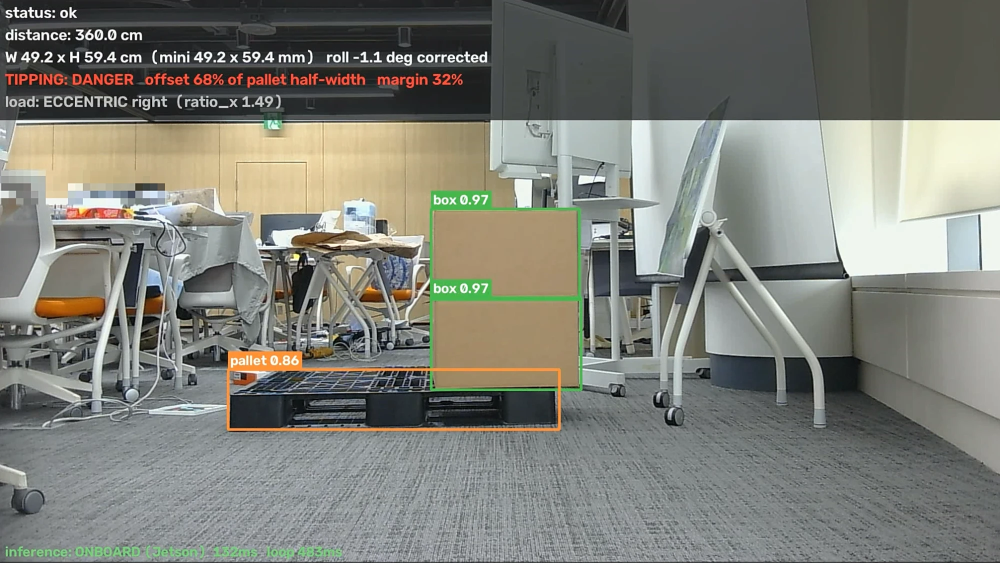
TIPPING: DANGER 한쪽으로 편심 68% · 여유 32%
02무인 지게차
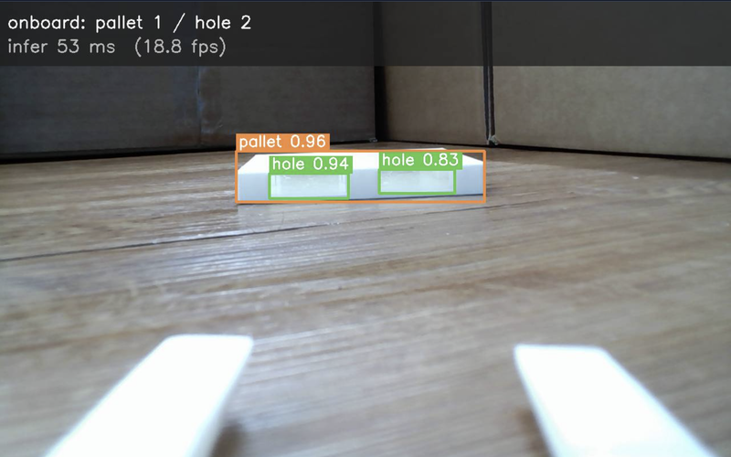
pallet 1 · hole 2 차량 카메라가 본 화면
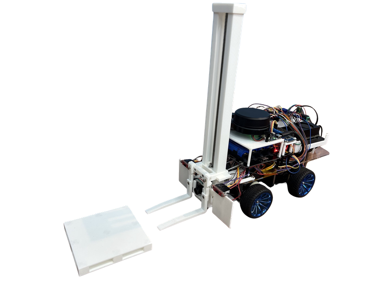
그 카메라를 실은 1/10 스케일 지게차 · Jetson · LiDAR
Project 02 F.A.S.T.
08 / 15
스크럼 마스터 AI에 붙이기 전에 쓴 요구사항 명세 600줄
AI는 잘못된 요구사항도 빠르게 구현 → 착수 전에 명세부터.
600줄
요구사항 명세 선행
기능 요구사항을 FR-101-1처럼 계층 번호로 쪼갠 명세. 실물을 만지며 결정이 바뀔 때마다 함께 수정.
1 : 1
명세 번호 = Jira 이슈 제목
번호 하나로 명세·이슈·브랜치·MR이 연결. 이 이슈가 명세 어디에서 나왔는지 항상 추적 가능.
100건 배정
에픽·스토리 분해 · 배정
명세를 에픽·스토리로 쪼개 팀원 5명에게 배정. 임베디드·ROS 2는 내 전문 밖이라 담당 팀원 두 명의 검토를 거쳐 명세 확정.
334 / 572
팀 커밋 중 내 커밋 · develop 기준 58%
Project 02 F.A.S.T.
09 / 15
배포 · 운영 안정성은 주의력이 아니라 구조로
제어 주기 미달 · 재부팅 미기동 · 결과 오귀속 → 그때그때가 아니라 구조로.
실행 환경실물 운행에서 드러난 세 지점
10 → 22.2fps
제어 주기 미달 · TensorRT 전환
젯슨 Orin Nano에서 10 fps 미달. ONNX를 TensorRT FP16으로 변환해 Tensor Core를 태우고 전처리를 정리해 엔진 10.18ms · 종단 44.96ms.
5회 / 5분
systemd 자동 기동 · 재시작 상한
재부팅 후 추론 서버가 안 뜨는 것을 실측하고 systemd에 등록. CUDA 컨텍스트를 못 잡는 실패는 재시작해도 계속 실패하므로 5분에 5회로 상한.
sessionId
지연 결과 오귀속 · 세션 ID
측정 결과가 늦게 도착하면 다음 작업의 결과로 잘못 귀속. 세션 발급을 필수로 만들고 활성 세션과 다르면 서버가 거부하도록 규격에 반영.
배포 파이프라인GitLab CI · develop 자동배포
① 빌드 · 테스트./mvnw clean package가 테스트까지 수행. 실패 시 배포 중단이라 돌던 컨테이너는 무손상.
↓
② 이미지 교체통과분만 배포 대상. 배포 관련 변경에만 트리거가 걸리도록 범위 한정.
↓
③ 헬스체크 · 롤백기동 후 헬스체크 실패면 직전 이미지로 롤백. 롤백은 trap이 아니라 명시 호출. "적혀만 있고 한 번도 안 도는 것"을 막기 위해.
Project 02 F.A.S.T.
10 / 15
AI · 비전 요구가 다르면 모델도 다르게
스테이션은 크기·전복 판정, 온보드는 포크 위치. 답이 달라 모델도 분리.
RTMDet-m@800 · TensorRT FP32
스테이션 · 크기와 전복 여부
box·pallet을 함께 검출 → 박스 픽셀 높이 × 거리계 거리 ÷ 초점거리로 실제 높이 산출 → 파렛트 절반 폭에서 치우친 정도로 SAFE / DANGER 판정.
RTMDet-s@640 · TensorRT FP16
온보드 · 포크 삽입 위치
파렛트가 아니라 포크가 들어갈 구멍 두 개를 검출 → 두 구멍의 화면 좌표로 좌우 오차와 틀어진 각도를 구해 주행 명령 생성 → SEARCH → APPROACH → ALIGN → VERIFY → INSERT, 실패 시 후퇴 후 재접근.
학습 사이클데이터 보강 → 실물 평가 → 승격
① 공개 데이터 + 자체 촬영 572장학습셋 20,565장의 뼈대는 공개 데이터(LOCO·SCD). 목재 파렛트뿐이라 검은 플라스틱은 임계 0.02에서도 검출 0건. 리그에서 직접 촬영·라벨링한 572장(리그 289 + 가림 283)으로 도메인 파인튜닝.
→
② 실물 리그 평가셋KPI 판정 무대를 공개 데이터셋에서 실물 리그 평가셋으로 이전. 배포 환경과 평가 환경을 맞추기 위해.
→
③ 승격 게이트 3조건교체 조건은 착수 전에 고정: 목표 지표·회귀 없음·망각 없음. 공개 데이터로 동률이던 두 실험이 실물 리그 12프레임에서 11/12 대 12/12로 판가름.
0.66mm
화물 치수 오차 · 실물 박스 6.6mm의 1/10 환산 · 요구는 4mm 이내
44.96ms
온보드 추론 종단 · 제어 루프 예산 100ms
99.5%
구멍 재현율 220/221 · 요구는 95% 이상
100%
파렛트 재현율 105/105 · 요구는 98% 이상 · 네거티브 120장 오탐 0건
Project 03
HairFolio
외주 · 기획을 뺀 전 영역을 21일 동안 단독 개발
혼자 팀 프로세스를 돌린 방법
규칙 문서 2종 세션이 바뀌어도 맥락 유지
CLAUDE.md 매 작업에 적용되는 규칙
ai-harness.md 스택 · 브랜치 · PR 상세 규칙
라이프사이클 커맨드 2종 1인인데도 팀 절차 그대로
시작 깃 이슈 · 트래커 티켓 · 브랜치를 한 번에 만들고 서로 링크
종료 PR 생성 → CI 통과 대기 → squash 머지 → 티켓 완료 → 배포 스모크
토큰 비용 규칙 컨텍스트를 예산으로 취급
넓은 탐색은 서브에이전트 위임Grep으로 위치 찾고 해당 줄만 읽기확인된 사실 재조회 금지diff 위험도 티어링
Project 03 HairFolio
12 / 15
AI 협업 하네스 사람이 아니라 훅과 에이전트로 세운 리뷰어
규칙을 지키는 주체를 사람 → 시스템으로.
2개 훅
push 게이트 훅
PreToolUse가 git push를 잡아 게이트 체크리스트를 다시 주입, Stop이 턴 종료 시 타입체크를 실행해 실패면 exit 2로 차단. 컨텍스트 압축으로 규칙이 사라지는 지점을 훅이 메우는 구조.
2개 명령
완료 기준(DoD) 명령화
프론트·앱을 고치면 npx tsc --noEmit, 서버 변경이 push에 끼면 ./mvnw test. 통과 기준이 없으면 게이트는 도장만 찍는 꼴.
5종 에이전트
검토자와 작성자 분리
diff 리뷰, 웹·앱 화면 동기화 검사, 시나리오 QA, 계약 추출, 배포 후 헬스 점검. 부여하는 도구에서 편집 도구를 빼 구조적으로 수정 불가.
32건 기각
채택·기각 기록 · PR 템플릿
템플릿에 채택·기각 사유 칸을 만들어 작업마다 기록. 검토 에이전트가 잘못 짚은 것을 직접 확인하고 되돌린 건도 포함.
460
21일 연속 커밋 · 일 평균 21.9건, 최고 51건
281PR
이슈 113건 · 로직·API 변경은 diff 리뷰 필수, 스타일은 생략
303
백엔드 테스트 케이스 · 61개 파일 · 게이트의 판단 근거
Project 03 HairFolio
13 / 15
백엔드 트러블슈팅 예외가 나지 않은 결함 세 건
저장 실패 · 성능 저하 · 무인증 접근: 로그엔 흔적 없음.
무인증 리소스 접근
관리자 API를 빼면 요청자 신원 확인 체계가 없는 상태. 남의 자원을 조회·취소·변경, 타인 명의 생성까지 가능.
→
인가 조치 · 네 단계로 확장
① 신원토큰 발급·검증 체계 수립
② 소유권서비스 레이어에서 자원 소유자 확인
③ 역할상태 전이를 행위자 역할별로 분리
④ 만료리프레시 토큰은 불투명 랜덤 값 · DB에는 SHA-256 해시만 · 회전 시 재사용 차단
스케줄러 트랜잭션 누락
@Scheduled가 같은 클래스의 @Transactional을 내부 호출해 프록시 우회. 엔티티가 detached라 발송 플래그 미저장.
N+1
1
채팅방 목록방마다 마지막 메시지를 따로 조회
→
MAX(id) 서브쿼리로 한 번에 모아 메모리 매핑
2
예약 목록@ElementCollection이라 EntityGraph로 안 잡히고 지연 로딩
→
@BatchSize(100)으로 IN 절 배치 로딩
Project 04
LearnBridge
역할 기반 접근 제어(RBAC) 통합 학사 관리 플랫폼
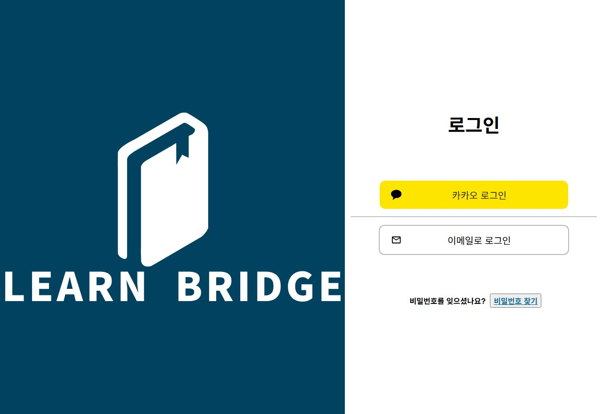
로그인 · 카카오 OAuth · 이메일
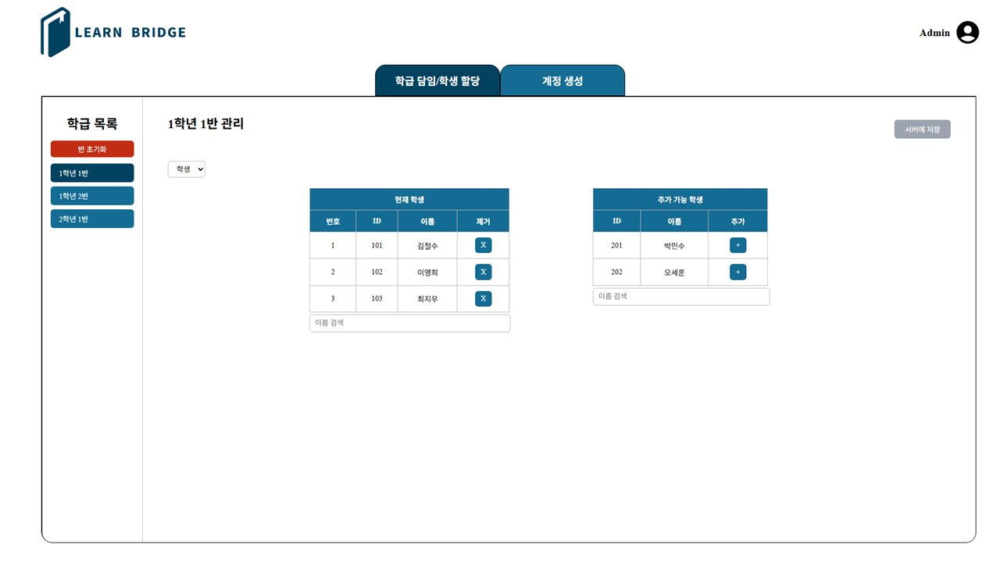
관리자 · 반 배정 · 담임·학생 할당
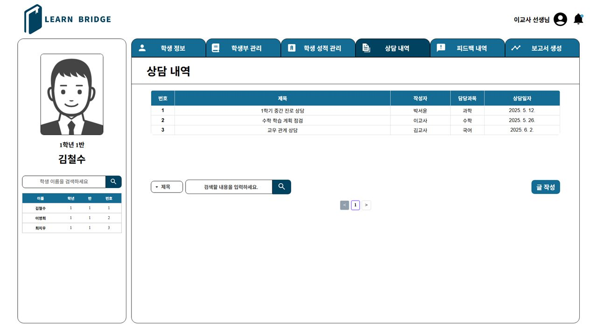
교사 화면 · 담임 반 학생 목록 · 상담 내역
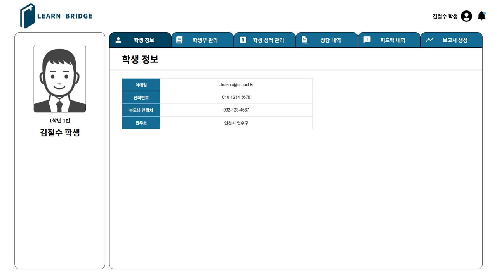
학생 화면 · 본인 정보만 조회 · 권한별 범위 차등
Project 04 LearnBridge
15 / 15
인증 화면에 드러나지 않는 토큰 만료
만료돼도 끊긴 요청을 버리지 않고 재전송.
Silent Refresh
Axios 인터셉터
① 401 선별 수신화면 코드가 아니라 인터셉터가 수신. 401 중 만료 사유만 골라 재발급 대상으로 판정.
→
② 백그라운드 재발급재발급 요청에는 만료 토큰을 붙이지 않아 순환 차단. _retry 플래그로 무한 루프 방지.
→
③ 원 요청 재전송새 토큰으로 끊긴 요청을 다시 보냄. 화면에는 아무 변화 없음.